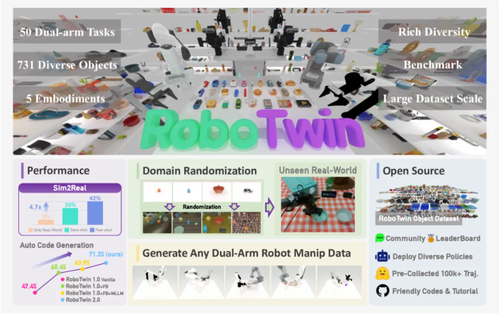
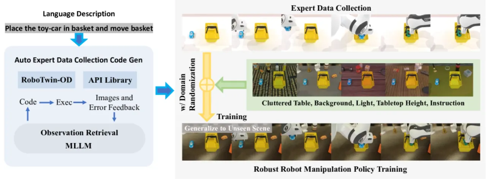
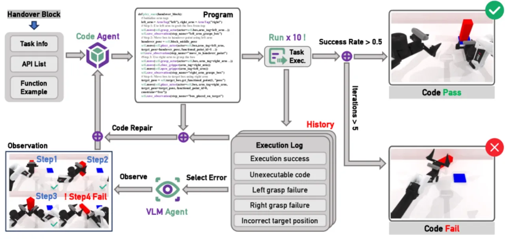
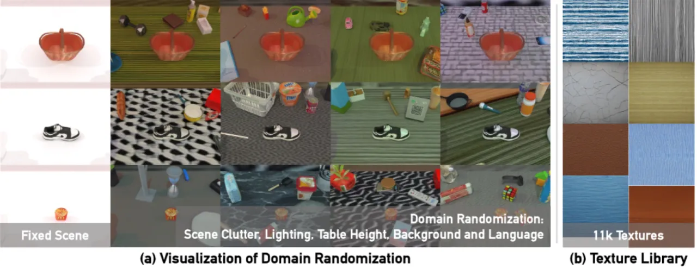
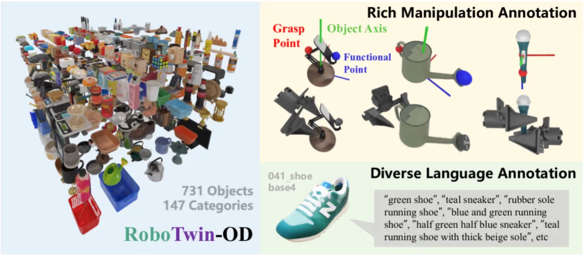
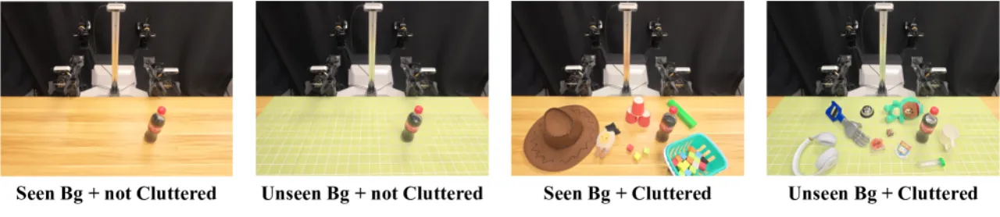
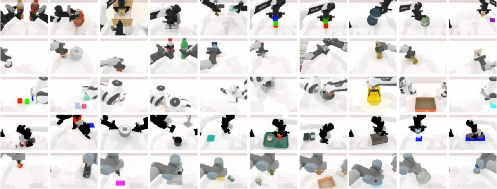

RoboTwin 2.0 是一个面向双臂机器人操作的大规模合成数据生成框架，集成了基于多模态大语言模型（MLLM）的闭环专家代码生成、五维域随机化以及机器人本体感知自适应抓取。该系统包含 731 个物体组成的操作数据集，覆盖 147 个类别，预生成超过 10 万条专家轨迹，并提供 50 任务双臂操作基准，显著提升了策略在真实世界中的泛化能力。
双臂机器人操作需要海量高质量轨迹数据，而现有合成数据管线在自动质量控制、场景多样性和跨机器人平台泛化三方面存在根本缺陷。
"lack of automated quality control: without an expert-level validation loop, many generated trajectories include execution failures or suboptimal grasps; domain randomization is often superficial, yielding overly clean and homogeneous scenes; overlooking cross-embodiment variation: different bimanual platforms can differ substantially in their kinematic capabilities."

真实数据采集成本高昂且难以规模化，而直接使用合成数据训练的策略往往因 sim-to-real 差距而失败。RoboTwin 2.0 通过三个相互协同的组件来解决上述问题：自动化专家数据生成、全面的域随机化，以及机器人本体感知自适应，从而生成 "high-quality, diverse, realistic, and interaction-rich datasets for bimanual manipulation"。
RoboTwin 2.0 由三大核心组件构成：MLLM 驱动的闭环专家代码生成、五维系统性域随机化，以及基于物体 affordance 的机器人本体感知抓取适配。

系统采用闭环架构，由代码生成模型与视觉-语言观察者模型协同工作。每次生成的任务程序在仿真中执行 10 次以评估随机性影响。观察者模型对失败执行进行逐帧检查，诊断失败模式（如抓取轴错误、碰撞干涉等），并向代码生成模型反馈精准的错误定位，指导代码修复。最多允许 5 次连续迭代修正，未达标则终止并标记为失败任务。与仅使用文本反馈相比，多模态反馈将 Average Success Rate (ASR) 从 62.1% 提升至 71.3%，同时将 token 消耗从 1236.6 降至 839.7。

针对场景外观和语言指令实施五个维度的系统化增广，从根本上解决仿真到现实的视觉差距：

不同双臂平台在运动学上差异显著（如 Piper 自由度受限，Aloha-AgileX 臂展不同），通用抓取姿态往往导致部分平台无法执行。RoboTwin 2.0 为 RoboTwin-OD 中的每个物体标注多个候选操作姿态（覆盖不同抓取轴），通过角度扰动偏向更高可达性的抓取候选，实现平台专属的抓取执行。该策略在全平台平均提升 8.3% 的操作成功率，其中低自由度平台 Piper 提升最高达 +22.7%，Aloha-AgileX 提升 +13.7%。

在代码生成质量、策略鲁棒性（仿真）以及 sim-to-real 迁移三个维度上进行全面评估，涵盖 RDT、Pi0、DP3 等主流策略学习方法和 5 种机器人平台。
| 方法 | ASR (%) | Top5-ASR (%) | CR-Iter | Token Cost |
|---|---|---|---|---|
| RoboTwin 1.0 Vanilla | 47.4 | — | 2.42 | 1236.6 |
| RoboTwin 2.0（文本反馈） | 62.1 | — | — | — |
| RoboTwin 2.0（多模态反馈） | 71.3 | 78.6 | 1.76 | 839.7 |
在 50 任务基准（Easy vs. Hard 配置）上评估 RDT、Pi0、DP3 等策略。使用域随机化数据训练相比 clean 数据带来显著提升，且 Hard 配置下分数骤降凸显了真实鲁棒性挑战：
| 策略 | Easy (%) | Hard (%) | 域随机化提升（RDT） |
|---|---|---|---|
| RDT | 34.5 | 13.7 | +31.9%（相对提升） |
| Pi0 | 46.4 | 16.3 | +29.3%（相对提升） |
| DP3 | 55.2 | 5.0 | — |
在 Franka 平台上进行四种配置（seen/unseen 场景 × clean/cluttered 环境）的真实实验，使用 10 条真实演示 + 1000 条合成轨迹的 few-shot 设置：
| 配置 | Seen Clean | Seen Cluttered | Unseen Clean | Unseen Cluttered |
|---|---|---|---|---|
| 域随机化合成数据增益 | +13.5% | +27.5% | +23.5% | +33.0% |
在 unseen 背景的 zero-shot 配置（仅合成数据，无真实演示）下，成功率分别提升 +21.0% 和 +20.5%。总体而言，10 条真实样本 + 合成数据相对于仅使用真实数据的基线实现了 367% 的相对增益。


对域随机化各维度的消融结果表明，杂乱物体和背景纹理对 sim-to-real 性能贡献最大；Clean 数据训练对域随机化测试场景的提升"showed negligible improvements"，说明五维随机化不可或缺。机器人本体感知抓取适配的消融同样显示，低自由度平台（如 Piper）获益最明显（+22.7%），验证了平台专属抓取候选策略的必要性。
论文指出，视觉-语言观察者模型对失败执行的错误定位准确率仅约 30%。"failures from invisible factors like incorrect grasp axis parameters remain challenging for purely vision-based observers to diagnose."这意味着部分失败轨迹可能无法被有效过滤，影响数据质量的上限。
即便使用域随机化数据，策略在 Hard 基准配置下的成功率相较 Easy 配置仍显著下降（DP3 从 55.2% 跌至 5.0%，Pi0 从 46.4% 跌至 16.3%），说明现有策略对强随机化场景的鲁棒性仍有 "significant room for improvement"。
当前系统覆盖 50 个任务和 5 种平台，代码生成的 ASR 上限为 71.3%（Top5-ASR 78.6%），约有 20-30% 的任务程序生成失败。对于需要更复杂接触物理或长时程规划的任务，MLLM 驱动的代码生成可靠性可能进一步下降，限制了系统向更广泛操作场景的自动扩展。
真实世界实验主要在 Franka 平台上进行，其余四种平台（Piper、UR5、ARX-X5、Aloha-AgileX）的 sim-to-real 结果以仿真为主，真实部署验证尚不完整，不同平台间的迁移效果有待进一步实验确认。